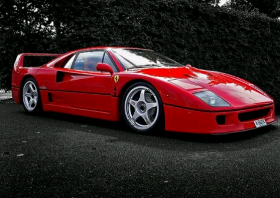
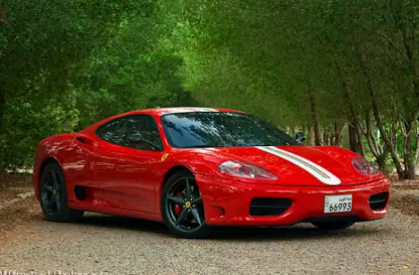
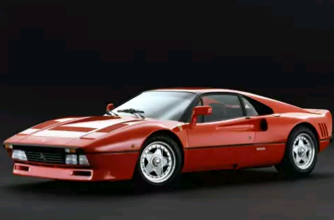
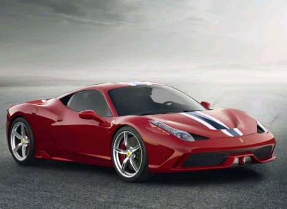
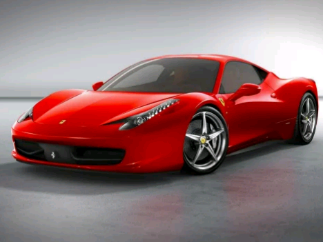
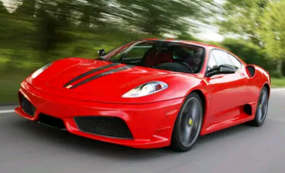
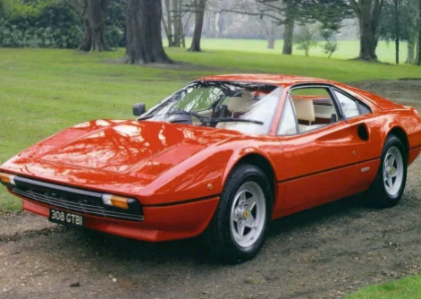
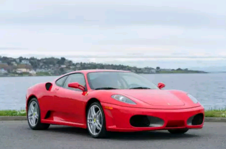
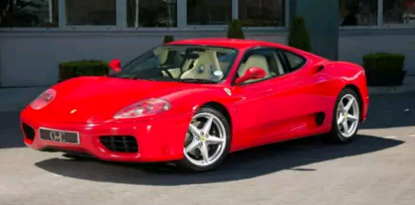

Categories
Here’s a list of our top 10 Ferrari V8s
Here are our Top 10 Ferrari V8s (we have stuck to the road cars only). See what you think? Let me have your top 10, or change the order. So there you have out top 10 Ferrari V8s. We’d love to hear what you think.

Ferrari F40 (1987)The daddy some would say. This Ferrari has to be in the top 10 Ferraris of all time, let alone the top 10 V8s. A racing car for the road (and we all love those). 1,605 made, and we desire one, hence why this supercar is No.1. |
|---|

Ferrari Challenge Stradale (2003)The loudest road going Ferrari ever, and a personal favourite. To this day I think it’s one of the best of all Ferraris. How many were made, approx 800 t0 1288, depending on what you read where. If anyone has a definitive and verified number let me know. A true beast. A race car for the road. A 10/10 car in our opinion. |
|---|
Ferrari 288 GTO (1984)A Daddy of Ferraris. The 288 GTO is beautiful, iconic, cool and desirable, which is why it has to be in the MyCarHeaven top 10. It’s extreme, as all Ferraris should be (in our opinion). It’s based on the 308 GTB body shape, a shape we love. 272 cars were made. LOVE IT. |
|---|
Ferrari 458 Speciale (2014)The top performing 458 Italia, so in our top 10 Ferrari V8s for that alone. The 458 Italia is an epic Ferrari, the Speciale, like the Scuderia and Challenge Stradale will always have a special place in our heart. 0 to 62 mph (100 km/h) in just three seconds (0–125 mph or 0–200 km/h in 9.1 seconds with a response time of just 0.060 seconds). Ferrari declared a Fiorano test track lap time of 1:23.5, only 0.5 seconds slower than the F12 Berlinetta. |
|---|
Ferrari 458 Italia (2009)Beautiful, a 9-10/10 for looks, but I’m not a massive fan of the tech., but it is awesome. A car I’ve test driven. It has to be in our Top 10 Ferrari V8s of all time, in at No.5. Not sure on production numbers. |
|---|
 Ferrari 488 GTB (2015)Named “The Supercar of the Year 2015” by car magazine Top Gear, as well as becoming Motor Trend’s 2017 “Best Drivers Car”. 0–100 km/h (0–62 mph) in 3.0 seconds, 0–200 km/h (0–124 mph) in 8.3 seconds, covering the quarter mile in 10.45 seconds and continuing to a top speed in excess of 330 km/h (205 mph). It looks amazing, so has to be in our Top 10 Ferrari V8s of all time, at No.6. |
|---|
Ferrari 430 Scuderia (2007)What’s not to love. Make the F430 (already a great car) lighter, track focused, and you have a Ferrari classic. Not sure on the production numbers. |
|---|
Ferrari 308 GTB and GTS (1975)Now we are talking. This is a beautiful car, and you can see similar styling notes on the 360 and F430. A contender for sure. This car was in production for 10 years, 12,000 cars sold. I do want to have one of these at some point. |
|---|
Ferrari F430 (2004)What a car, but too much tech for me personally. It looks similar to the 360, so for that reason it has to be in our top 10 Ferrari V8s of all time. No idea on total numbers of F430s made, but I’d guess less than the 360. Anyone know? |
|---|
Ferrari 360 Modena (1999)The most successful Ferrari ever made at the time, with 8,800 Modenas produced worldwide. In our opinion a lovely body shape, and from this car the legendary Challenge Stradale was born and for that alone is must be held in high esteem. |
|---|
 Ferrari
Ferrari Honda
Honda Ford
Ford Suzuki
Suzuki Lamborghini
Lamborghini Lexus
Lexus Jaguar
Jaguar BMW
BMW GMC
GMC Mercedes-Benz
Mercedes-Benz